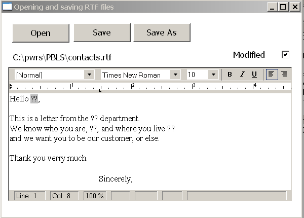
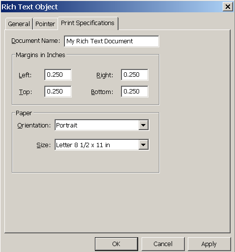

A RichTextEdit control in a window or user object lets the user view or edit formatted text. Functions allow you to manipulate the contents of the control by inserting text, getting the selected text, managing input fields, and setting properties for all or some of the contents.
You define RichTextEdit controls in the Window painter or the User Object painter.
In the Window or User Object painter, on the Document page of the RichTextEdit control's property sheet, you can enable or disable the features in Table 16-1.
You can also specify a name for the document that is displayed in the print queue. The document name has nothing to do with a text file you might insert in the control.
When users display the property sheet for the rich text document, they can change the tools that are available to them, which you might not want. For example, they might:
You might want to guard against some of these possibilities. You can reset the property values for these settings in a script. For example, this statement restores the pop-up menu when triggered in an event script:
rte_1.PopMenu = TRUE
The user can press Ctrl+Z to undo a change. You can also program a button or menu item that calls the Undo function.
If Undo is called repeatedly, it continues to undo changes to a maximum of 50 changes. The script can check whether there are changes that can be undone (meaning the maximum depth has not been reached) by calling the CanUndo function:
IF rte_1.CanUndo() THEN
rte_1.Undo()
ELSE
MessageBox("Stop", "Nothing to undo.")
END IF
In the Window painter, you do not enter text in the control. Instead, in your application you can programmatically insert text or let the user enter text using the editing tools.
 Setting a default font The Font tab page in the Properties view for a RichTextEdit
control lets you set default font characteristics for the control.
When the control first displays at runtime, and you include the
toolbar with a RichTextEdit control, the toolbar indicates the default
font characteristics that you selected on the Font tab page at design
time. Although the application user can change fonts at runtime,
or you can use PowerScript to change the font style, you can set
the default font at design time only.
Setting a default font The Font tab page in the Properties view for a RichTextEdit
control lets you set default font characteristics for the control.
When the control first displays at runtime, and you include the
toolbar with a RichTextEdit control, the toolbar indicates the default
font characteristics that you selected on the Font tab page at design
time. Although the application user can change fonts at runtime,
or you can use PowerScript to change the font style, you can set
the default font at design time only.
From a file If you have prepared a text file for your application, you can insert it with the InsertDocument function. The file can be rich text or ASCII:
li_rtn = rte_1.InsertDocument &
("c:\mydir\contacts.rtf", FALSE, FileTypeRichText!)
The boolean clearflag argument lets you specify whether to insert the file into existing text or replace it. If you want to include headers and footers from a document that you insert, you must replace the existing text by setting the clearflag argument to TRUE. (The InsertFile command on the runtime pop-up menu is equivalent to the InsertDocument function with the clearflag argument set to FALSE.)
 DisplayOnly property must be set to false You cannot insert a document into a rich text control when
the control's DisplayOnly property is set to true. If you
try to do this, PowerBuilder displays a runtime error message.
DisplayOnly property must be set to false You cannot insert a document into a rich text control when
the control's DisplayOnly property is set to true. If you
try to do this, PowerBuilder displays a runtime error message.
From a database If you have saved rich text as a string in a database, you can use a DataStore to retrieve the text.
After retrieving data, paste the string into the RichTextEdit control:
ls_desc = dw_1.Object.prod_desc.Primary[1]
rte_1.PasteRTF(ls_desc)
 Rich text and the clipboard The CopyRTF and PasteRTF functions
let you get rich text with formatting instructions and
store it in a string. If you use the clipboard by means of the Copy, Cut,
and Paste functions, you get the text only—the
formatting is lost.
Rich text and the clipboard The CopyRTF and PasteRTF functions
let you get rich text with formatting instructions and
store it in a string. If you use the clipboard by means of the Copy, Cut,
and Paste functions, you get the text only—the
formatting is lost.
Suppose you have a database table that records tech support calls. Various fields record each call's date, support engineer, and customer. Another field stores notes about the call. You can let the user record notes with bold and italic formatting for emphasis by storing rich text instead of plain text.
The window for editing call information includes these controls:
RowFocusChanged event As row focus changes, the notes for the current row are pasted into the RichTextEdit control. The RowFocusChanged event has this script:
string ls_richtext
// Get the string from the call_notes column
ls_richtext = dw_1.Object.call_notes[currentrow]
// Prevent flicker
rte_1.SetRedraw(FALSE)
// Replace the old text with text for the current row
rte_1.SelectTextAll()
rte_1.Clear()
rte_1.PasteRTF(ls_richtext)
rte_1.SetRedraw(TRUE)
LoseFocus event When the user makes changes, the changes are transferred to the DataWindow control. It is assumed that the user will click on the button or the DataWindow control when the user is through editing, triggering the LoseFocus event, which has this script:
string ls_richtext
long l_currow
GraphicObject l_control
// Check whether RichTextEdit still has focus
// If so, don't transfer the text
l_control = GetFocus()
IF TypeOf(l_control) = RichTextEdit! THEN RETURN 0
// Prevent flicker
rte_1.SetRedraw(FALSE)
// Store all the text in string ls_richtext
ls_richtext = rte_1.CopyRTF()
// Assign the rich text to the call_notes column
// in the current row
l_currow = dw_1.GetRow()
dw_1.Object.call_notes[l_currow] = ls_richtext
rte_1.SetRedraw(TRUE)
 LoseFocus and the toolbars A LoseFocus event occurs for the RichTextEdit control even
when the user clicks a RichTextEdit toolbar. Technically, this is
because the toolbars are in their own windows. However, the RichTextEdit
control still has focus, which you can check with the GetFocus function.
LoseFocus and the toolbars A LoseFocus event occurs for the RichTextEdit control even
when the user clicks a RichTextEdit toolbar. Technically, this is
because the toolbars are in their own windows. However, the RichTextEdit
control still has focus, which you can check with the GetFocus function.
You can save the rich text in the control, with the input field definitions, with the SaveDocument function. You have the choice of rich text format (RTF) or ASCII:
rte_1.SaveDocument("c:\...\contacts.rtf", &
FileTypeRichText!)
SaveDocument does not save the data in the input fields. It saves the document template.
Does the file exist? If the file exists, calling SaveDocument triggers the FileExists event. In the event script, you might ask users if they want to overwrite the file.
To cancel the saving process, specify a return code of 1 in the event script.
Are there changes that need saving? The Modified property indicates whether any changes have been made to the contents of the control. It indicates that the contents are in an unsaved state. When the first change occurs, PowerBuilder triggers the Modified event and sets the Modified property to TRUE. Calling SaveDocument sets Modified to FALSE, indicating that the document is clean.
Opening a file triggers the Modified event and sets the property because the control's contents changed. Usually, though, what you really want to know is whether the contents of the control still correspond to the contents of the file. Therefore, in the script that opens the file, you can set the Modified property to FALSE yourself. Then when the user begins editing, the Modified event is triggered again and the property is reset to TRUE.
This example consists of several scripts that handle opening and saving files. Users can open existing files and save changes. They can also save the contents to another file. If users save the file they opened, saving proceeds without interrupting the user. If users save to a file name that exists, but is not the file they opened, they are asked whether to overwrite the file:

The example includes instance variable declarations, scripts, functions, and events.
ib_saveas A flag for the FileExists event. When FALSE, the user is saving to the file that was opened, so overwriting is expected:
boolean ib_saveas=FALSE
is_filename The current file name for the contents, initially set to "Untitled":
string is_filename
This script opens a file chosen by the user. Since opening a file triggers the Modified event and sets the Modified property, the script resets Modified to FALSE. The Checked property of the Modified check box is set to FALSE too:
integer li_answer, li_result
string ls_name, ls_path
li_answer = GetFileOpenName("Open File", ls_path, &
ls_name, "rtf", &
"Rich Text(*.RTF),*.RTF, Text files(*.TXT),*.TXT")
IF li_answer = 1 THEN
// User did not cancel
li_result = rte_1.InsertDocument(ls_path, TRUE)
IF li_result = 1 THEN // Document open successful
// Save and display file name
is_filename = ls_path
st_filename.Text = is_filename
// Save and display modified status
rte_1.Modified = FALSE
cbx_modified.Checked = rte_1.Modified
ELSE
MessageBox("Error", "File not opened.")
END IF
END IF
RETURN 0
The user might choose to save the document to the same name or to a new name. These scripts could be assigned to menu items as well as buttons. The Save button script checks whether the instance variable is_filename holds a valid name. If so, it passes that file name to the of_save function. If not, it triggers the SaveAs button's script instead:
integer li_result
string ls_name
// If not associated with file, get file name
IF is_filename = "Untitled" THEN
cb_saveas.EVENT Clicked()
ELSE
li_result = Parent.of_save(is_filename)
END IF
RETURN 0
The SaveAs script sets the instance variable ib_saveas so that the FileExists event, if triggered, knows to ask about overwriting the file. It calls of_getfilename to prompt for a file name before passing that file name to the of_save function.
integer li_result
string ls_name
ib_saveas = TRUE
ls_name = Parent.of_getfilename()
// If the user canceled or an error occurred, abort
IF ls_name = "" THEN RETURN -1
li_result = Parent.of_save(ls_name)
ib_saveas = FALSE
RETURN 0
of_save function This function accepts a file name argument and saves the document. It updates the file name instance variable with the new name and sets the check box to correspond with the Modified property, which is automatically set to FALSE after you call SaveDocument successfully:
integer li_result
MessageBox("File name", as_name)
// Don't need a file type because the extension
// will trigger the correct type of save
li_result = rte_1.SaveDocument(as_name)
IF li_result = -1 THEN
MessageBox("Warning", "File not saved.")
RETURN -1
ELSE
// File saved successfully
is_filename = as_name
st_filename.Text = is_filename
cbx_modified.Checked = rte_1.Modified
RETURN 1
END IF
of_getfilename function The function prompts the user for a name and returns the file name the user selects. It is called when a file name has not yet been specified or when the user chooses Save As. It returns a file name:
integer li_answer
string ls_name, ls_path
li_answer = GetFileSaveName("Document Name", ls_path, &
ls_name, "rtf", &
"Rich Text(*.RTF),*.RTF,Text files(*.TXT),*.TXT")
IF li_answer = 1 THEN
// Return specified file name
RETURN ls_path
ELSE
RETURN ""
END IF
FileExists event When the user has selected a file name and the file already exists, this script warns the user and allows the save to be canceled. The event occurs when SaveDocument tries to save a file and it already exists. The script checks whether ib_saveas is TRUE and, if so, asks if the user wants to proceed with overwriting the existing file:
integer li_answer
// If user asked to Save to same file,
// don't prompt for overwriting
IF ib_saveas = FALSE THEN RETURN 0
li_answer = MessageBox("FileExists", &
filename + " already exists. Overwrite?", &
Exclamation!, YesNo!)
// Returning a non-zero value cancels save
IF li_answer = 2 THEN RETURN 1
Modified event This script sets a check box so the user can see that changes have not been saved. The Modified property is set automatically when the event occurs. The event is triggered when the first change is made to the contents of the control:
cbx_modified.Checked = TRUE
CloseQuery event This script for the window's CloseQuery event checks whether the control has unsaved changes and asks whether to save the document before the window closes:
integer li_answer
// Are there unsaved changes? No, then return.
IF rte_1.Modified = FALSE THEN RETURN 0
// Ask user whether to save
li_answer = MessageBox("Document not saved", &
"Do you want to save " + is_filename + "?", &
Exclamation!, YesNo! )
IF li_answer = 1 THEN
// User says save. Trigger Save button script.
cb_save.EVENT Clicked()
END IF
RETURN 0
ActiveX controls can be used to spell check text in a RichTextEdit control. The supported ActiveX spell checking controls include VSSpell from ComponentOne and WSpell from Wintertree Software.
You can use the SelectedStartPos and SelectedTextLength properties of the RichTextEdit control to highlight the current position of a misspelled word in a text string that you are parsing with a supported ActiveX spell checking control. The following procedure uses an ActiveX control to spell check the entire text of the current band of a RichTextEdit control.
 To spell check selected text in a RichTextEdit
control:
To spell check selected text in a RichTextEdit
control:
On a window with a RichTextEdit control, select Insert>Control>OLE from the window menu.
Click the Insert Control tab of the Insert Object dialog box, select the installed ActiveX spell checking control, and click OK.
Click inside the window in the Window painter to insert the ActiveX control.
By default, the name of the inserted control is ole_n, where n = 1 when there are no other OLE controls on the window.
Add a menu item to a menu that you associate with the current window and change its Text label to Check Spelling.
Add the following code the the Clicked event of the menu item, where windowName is the name of the window containing the RichTextEdit and ActiveX controls:
string ls_selected
//get the current band context, and leave select mode
windowName.rte_1.selecttext(0,0,0,0)
windowName.rte_1.SelectTextAll()
ls_selected = windowName.rte_1.SelectedText()
windowName.rte_1.SelectedTextLength = 0
//assign the string content to the ActiveX control
windowName.ole_1.object.text = ls_selected
windowName.ole_1.object.start()
Select the ActiveX control in the Window painter and select ReplaceWord from the event list for the control.
Add the following code to the ReplaceWord event script:
string str
str = this.object.MisspelledWord
rte_1.SelectedStartPos = this.object.WordOffset
rte_1.SelectedTextLength = Len(str)
rte_1.ReplaceText(this.object.ReplacementWord)
messagebox("misspelled word", "replaced")The next time you run the application, you can click the Check Spelling menu item to spell check the entire contents of the current band of the RichTextEdit control.
In a RichText control, there are several user-addressable objects:
The user can make selections, use the toolbars, and display the property sheets for these objects.
Input fields get values either because the user or you specify a value or because you have called DataSource to associate the control with a DataWindow object or DataStore.
An input field is a named value. You name it and you determine what it means by setting its value. The value is associated with the input field name. You can have several fields with the same name and they all display the same value. If the user edits one of them, they all change.
In this sample text, an input field for the customer's name is repeated throughout:
In a script, you can set the value of the customer field:
rte_1.InputFieldChangeData("customer", "Mary")
Then the text would look like this:
The user can also set the value. There are two methods:
Inserting input fields in a script The InputFieldInsert function inserts a field at the insertion point:
rtn = rte_1.InputFieldInsert("datafield")
In a rich text editing application, you might want the user to insert input fields. The user needs a way to specify the input field name.
In this example, the user selects a name from a ListBox containing possible input field names. The script inserts an input field at the insertion point using the selected name:
string ls_field
integer rtn
ls_field = lb_fields.SelectedItem()
IF ls_field <> "" THEN
rtn = rte_1.InputFieldInsert( ls_field )
IF rtn = -1 THEN
MessageBox("Error", "Cannot insert field.")
END IF
ELSE
MessageBox("No Selection", &
"Please select an input field name.")
END IF
To display a date or a page number in a printed document, you define an input field and set the input field's value.
 To include today's date in the opening
of a letter, you might:
To include today's date in the opening
of a letter, you might:
Create an input field in the text. Name it anything you want.
In the script that opens the window or some other script, set the value of the input field to the current date.
For example, if the body of the letter included an input field called TODAY, you would write a script like the following to set it:
integer li_rtn
li_rtn = rte_1.InputFieldChangeData( "today", &
String(Today()) )
For information about setting page number values when printing, see "Preview and printing".
You can make a connection between a RichTextEdit control and a DataWindow control or DataStore object. When an input field in the RichTextEdit control has the same name as a column or computed column in the DataWindow object, it displays the associated data.
Whether or not the RichTextEdit control has a data source, there is always only one copy of the rich text content. While editing, you might visualize the RichTextEdit contents as a template into which row after row of data can be inserted. While scrolling from row to row, you might think of many instances of the document in which the text is fixed but the input field data changes.
To share data between a DataWindow object or DataStore, use the DataSource function:
rte_1.DataSource(ds_empdata)
If the DataWindow object associated with the DataStore ds_empdata has the four columns emp_id, emp_lname, emp_fname, and state, the RichTextEdit content might include text and input fields like this:
 Sample letter with columns from the employee table ID: {emp_id}
Sample letter with columns from the employee table ID: {emp_id}
For the RichTextEdit control, navigation keys let the user move among the pages of the document. However, you must provide scrolling controls so that the user can move from row to row.
You should provide Prior Row and Next Row buttons. The scripts for the buttons are simple. For Next Row:
rte_1.ScrollNextRow()
For Prior Row:
rte_1.ScrollPriorRow()
If you also provide page buttons, then when the user is on the last page of the document for one row, scrolling to the next page moves to the first page for the next row:
rte_1.ScrollNextPage()
Functions provide several ways to find out what is selected and to select text in the RichTextEdit control.
The text always contains an insertion point and it can contain a selection, which is shown as highlighted text. When there is a selection, the position of the insertion point can be at the start or the end of the selection, depending on how the selection is made. If the user drags from beginning to end, the insertion point is at the end. If the user drags from end to beginning, the insertion point is at the beginning.
The Position function provides information about the selection and the insertion point.
For more information, see Position in the PowerScript Reference .
The Pointer page of the Rich Text Object property sheet has a list box with stock pointers that can be used to indicate cursor position in a RichTextEdit control or RichText DataWindow. Users can change the cursor image at runtime by selecting one of these pointers and clicking OK in the Rich Text Object property sheet.
There are several functions that select portions of the text relative to the position of the insertion point:
A more general text selection function is SelectText. You specify the line and character number of the start and end of the selection.
Passing values to SelectText Because values obtained with Position provide more information than simply a selection range, you cannot pass the values directly to SelectText. In particular, zero is not a valid character position when selecting text, although it is meaningful in describing the selection.
For more information, see Position in the PowerScript Reference .
For an example of selecting words one by one for the purposes of spell checking, see the SelectTextWord function in the PowerScript Reference .
Tab order For a window or user object, you include the RichTextEdit control in the tab order of controls. However, after the user tabs to the RichTextEdit control, pressing the tab key inserts tabs into the text. The user cannot tab out to other controls. Keep this in mind when you design the tab order for a window.
Focus and the selection When the user tabs to the RichTextEdit control, the control gets focus and the current insertion point or selection is maintained. If the user clicks the RichTextEdit control to set focus, the insertion point moves to the place the user clicks.
LoseFocus event When the user clicks on a RichTextEdit toolbar, a LoseFocus event occurs. However, the RichTextEdit control still has focus. You can check whether the control has lost focus with the GetFocus function.
The user can preview the layout and print the contents of the RichTextEdit control. In preview mode, users see a view of the document reduced so that it fits inside the control. However, you must set the print margins and page size before you display the control in preview mode.
There are two ways to enter preview mode:
rte_1.Preview(TRUE)
If you set page margins at design time, or enable headers and footers for a rich text control, application users can adjust the margins of the control at runtime. Users can do this by opening the property sheet for the RichTextEdit control to the Print Specifications tab and modifying the left, right, top, or bottom margins, or by triggering an event that changes the margins in PowerScript code. Adjusting the margins in the Rich Text Object dialog box also affects the display of the RichTextEdit control content in print preview mode.
If you do not set page margins at design time or leave them at 0, any changes the user makes to the margins at runtime are visible in print preview mode only.

 Setting page size and orientation You cannot set the default page size and page orientation
at design time. However, users can set these properties at runtime
from the Print Specifications tab of the Rich Text Object dialog
box. This dialog box is available from the standard view only. You
must also enable the pop-up menu on a RichTextEdit control to enable
application users to display this dialog box.
Setting page size and orientation You cannot set the default page size and page orientation
at design time. However, users can set these properties at runtime
from the Print Specifications tab of the Rich Text Object dialog
box. This dialog box is available from the standard view only. You
must also enable the pop-up menu on a RichTextEdit control to enable
application users to display this dialog box.
If the RichTextEdit is using DataWindow object data, you can limit the number of rows printed by setting the Print.Page.Range property for the DataWindow control. Its value is a string that lists the page numbers that you want to print. A dash indicates a range.
Example of a page range Suppose your RichTextEdit control has a data source in the control dw_source. Your rich text document is three pages and you want to print the information for rows 2 and 5. You can set the page range property before you print:
dw_source.Object.DataWindow.Print.Page.Range = &
"4-6,13-15"
You can also filter or discard rows so that they are not printed.
For more information, see the SetFilter, Filter, RowsMove, and RowsDiscard functions in the PowerScript Reference and the Print DataWindow object property in the DataWindow Reference .
To print page numbers, you can use an input field in the header or footer. Although the page number field can be a string or numeric expression, when you insert the page number field in a header or footer, you must use it as a string expression only. For example, if you use page()*2 for an input field in the header or footer, the control or report is likely to display an incorrect result for the value of the numeric expression. However, the following string expression should display the correct page number and page count:
'Page ' + page() + ' of ' + pageCount())
This sample code sets the insertion point in the footer and inserts two blank lines, text, and two input fields:
rte_1.SelectText(1, 1, 0, 0, Footer!)
rte_1.ReplaceText("~r~n~r~nRow ")
rte_1.InputFieldInsert("row")
rte_1.ReplaceText(" Page ")
rte_1.InputFieldInsert("page")
rte_1.SetAlignment(Center!)